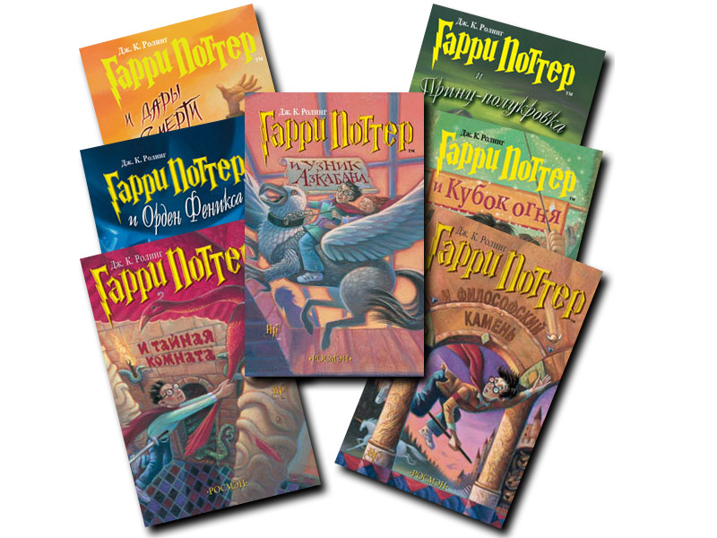

Самая знаменитая сага новейшего времени разошлась рекордным тиражом - более 400 миллионов экземпляров на 68 языках (включая эсперанто, древнегреческий и латынь). Книги Роулинг сумели оторвать детей и взрослых от экранов компьютеров и стали мощнейшим импульсом для интереса к чтению в современную эпоху.
Жизнь десятилетнего Гарри Поттера нельзя назвать сладкой: его родители умерли, едва ему исполнился год, а от дяди и тётки, взявших сироту на воспитание, достаются лишь тычки да подзатыльники. Но в одиннадцатый день рождения Гарри всё меняется. Странный гость, неожиданно появившийся на пороге, приносит письмо, из которого мальчик узнаёт, что на самом деле он чистокровный волшебник и принят в Хогвартс — школу магии. А уже через пару недель Гарри будет мчаться в поезде Хогвартс-экспресс навстречу новой жизни, где его ждут невероятные приключения, верные друзья и самое главное — ключ к разгадке тайны смерти его родителей.
Это вторая книга о приключениях Гарри Поттера. Он снова вступает в отчаянную схватку со злом. На этот раз враг его так силен, что надежды на победу почти нет. В Школе чародейства и волшебства «Хогвартс» происходят тревожные события. Кто-то нападает на учеников школы, и преподаватели подозревают, что это таинственное чудовище, которое скрывается в легендарной Тайной комнате. Гарри Поттер и его друзья разгадывают загадку Тайной комнаты, и теперь Гарри снова предстоит сразиться с лордом Волан-де-Мортом. Сумеет ли он победить на этот раз?

Двенадцать долгих лет в Азкабане - мрачной тюрьме волшебного мира - содержался всем известный узник по имени Сириус Блэк. Его обвиняли в убийстве тринадцати человек и считали наследником лорда Волан-де Морта. И вот он бежал,и из оставленных им следов ясно, что на этот раз убийца поставил целью избавиться от Гарри Поттера. Теперь Гарри в опасности, даже за стенами соей волшебной школы, даже среди друзей - потому что среди них есть предатель, готовый открыть убийце путь в Хогвартс.